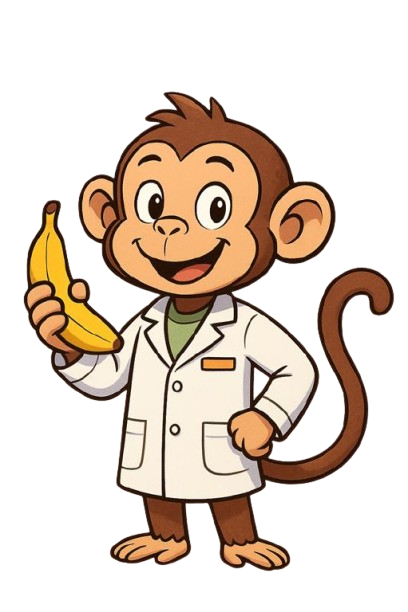

Sobre o Projeto
Nosso mascote é um macaquinho porque primatas têm uma alimentação diversificada, o que reflete a importância de uma dieta equilibrada.
Nossa Equipe
- Daniel Alves
- Thiago Lima
- João Nóbrega
- João Amaro
Atenção: Não somos nutricionistas. Todas as informações apresentadas neste site foram baseadas no site: [https://www.paho.org/pt/topicos/alimentacao-saudavel].